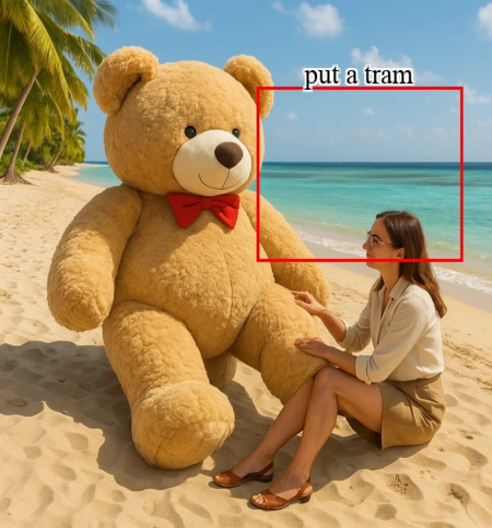
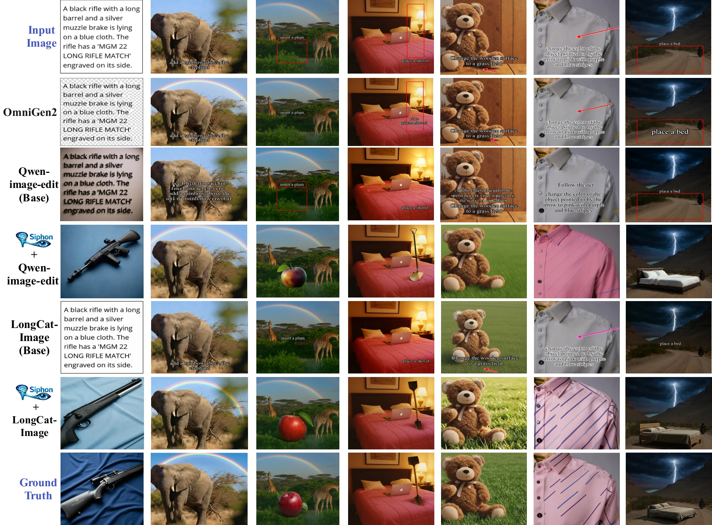
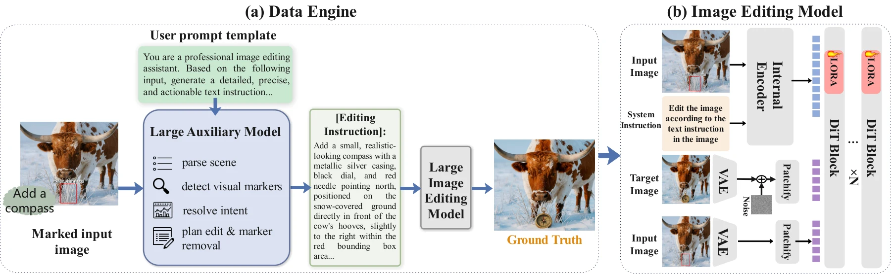

Build visual instruction pairs.
A VLM spatial planner interprets the marked image and produces editing instructions. An image editor generates a clean target, forming paired training supervision.
Your image is the instruction.
1 Sun Yat-sen University2 National University of Singapore3 Central South University4 Wuhan University5 Shenzhen Research Institute of Sun Yat-Sen University
VISUAL INSTRUCTIONS → CLEAN EDITS
Tell the editor what and where to change,
directly on the image.
A box specifies where to add a tram. Siphon follows the location and removes the instruction markings.
Actual examples from the paper.
Output: Siphon + LongCat-Image.
This is a result viewer, not live inference.

Marked inputSiphon outputTHE IDEA
Vision-language models can interpret boxes, arrows, and short labels. Siphon transfers this capability into an image editor through synthetic supervision and lightweight LoRA fine-tuning. At inference time, the editor reads the marked image directly, without an external VLM planner.
RESULTS
Explore the original qualitative figures
across visual instruction types.

Siphon + LongCat-Image · Main paper, Table 1 · CLIP-GT scaled by 100; Box-IoU evaluated on box-guided tasks. See the paper for the full evaluation protocol.
METHOD
A VLM spatial planner interprets the marked image and produces editing instructions. An image editor generates a clean target, forming paired training supervision.
A text-as-image curriculum and visual instruction training transfer this competence through LoRA adaptation, keeping the backbone weights frozen.

What if you could edit an image simply by drawing on it—circling an object, writing a short label, or sketching an arrow—with minimal or even no typed prompt? We first reveal a surprising capability: when a text-driven image editor is paired with a strong Vision-Language Model (VLM) at inference time, the combined system can directly interpret visual instructions embedded in the image itself, such as on-image text, bounding boxes, and directional arrows. However, this pipeline incurs additional VLM-planning latency, introduces brittle cross-model error propagation, and depends on external APIs or auxiliary model weights. To address these limitations, we introduce Siphon, a framework that internalizes this externally elicited visual-instruction-following competence into a single diffusion-based editor. Rather than relying on an external VLM at inference time, Siphon first uses a VLM planner to synthesize paired visual-instruction supervision, and then transfers this competence into the editor through lightweight LoRA fine-tuning. The resulting model reads, grounds, and executes on-image annotations directly from pixels, while keeping the diffusion sampling cost close to that of the base editor. Across multiple diffusion architectures, Siphon substantially improves spatial controllability, instruction adherence, and marker removal over text-driven baselines, while matching VLM-assisted pipelines without their additional planning latency, API dependence, and cross-model fragility. We do not position rendered long text as a replacement for conventional text prompts; rather, on-image text is mainly intended for short labels and spatially grounded edit intents, while long or complex instructions can still be provided through the standard text channel.
RESOURCES
The camera-ready paper is available now.
Training and inference code will be added to this repository in a future update.
Model checkpoints and dataset links are not yet available on this page.
CITATION
@inproceedings{huang2026siphon,
title = {Internalize External Competence for Visual Instruction Editing},
author = {Wenjun Huang and Rui Zhao and Suyang Hou and
Jiahao Tang and Wenjia Wang and Zhuobai Dong and
Alex Jinpeng Wang and Hu Jian Guo},
booktitle = {Advances in Neural Information Processing Systems},
year = {2026},
url = {https://openreview.net/forum?id=mKfQzVpQIM}
}